Ce tutoriel a pour objectif de te faire découvrir l'aspect caché de la barre d'outils Google. Si tu te demandes pourquoi installer la barre d'outils Google, les fonctions qu'elle assure, et si tu t'interroges sur la manière de personnaliser la barre d'outils, de créer tes propres raccourcis, ce tuto est fait pour toi. ;)
Et si tu te fiches de la barre d'outils Google, ce n'est pas une raison pour te sauver, tu trouveras forcément un tuto qui t'intéresse sur le SdZ !
1. Télécharger et installer la barre d'outils Google
C'est bien beau de vouloir personnaliser la barre d'outils Google, mais c'est quoi la barre d'outils Google ? :euh:
La barre d'outils Google (ou Google toolbar en anglais :p ) est un petit module qui s'ajoute sous la barre de navigation de votre navigateur, elle vous permet, entre autres, de bénéficier de raccourcis vers le moteur de recherche ainsi que de raccourcis vers les applications de la firme de Montain Wiew. Au final, si vous êtes friand des services Google, vous gagnerez du temps lors de votre navigation. Par défaut, Google propose les raccourcis vers ses services les plus demandés, mais nous allons voir par la suite comment personnaliser vos raccourcis. ;)
Nous allons maintenant voir comment installer l'application.
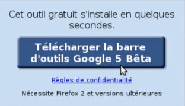
Il vous suffit d'ouvrir le navigateur sur lequel vous souhaitez installer la barre d'outils et de vous rendre à cette adresse. Le serveur va automatiquement récupérer la version de votre navigateur, ainsi que votre provenance géographique et vous proposer la dernière version de la toolbar susceptible de vous convenir. Il vous suffit de cliquer sur le bouton "télécharger la barre d'outils Google" pour démarrer l'installation. Après avoir lu et accepté le contrat, cliquez sur accepter et installer. Le site web vous propose le téléchargement des paquets d'installation de la barre d'outils. Fermez ensuite toutes les fenêtres que vous aviez ouvertes, et redémarrez votre navigateur. La barre d'outils est directement rattachée dans la fenêtre de votre navigateur.
Bon c'est bien beau d'avoir installé la barre d'outils, et si nous allions voir maintenant ses principales fonctions ? :pirate:
Je vais vous exposer ici les fonctions présentées par défaut sur notre barre d'outils. ^^ La voici :
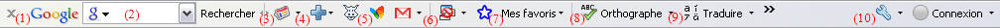
(1)
: Il s'agit d'un raccourci vers la page d'accueil du moteur de recherche. En un clic, vous vous retrouvez sur Google. (2)
: C'est le raccourci vers le champ de recherche. Tapez et recherchez vos informations sans changer de page. La recherche dans les services tels que Google News, Google vidéo est aussi possible ! (3)
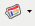
: Raccourci vers les services proposés par Google. (4)
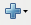
: Hum mais qu'est-ce que ce "+" dans ma barre d'outils. Il s'agit bien sûr du raccourci permettant de choisir les autres raccourcis que vous souhaitez voir apparaître dans votre barre d'outils. Bonne nouvelle, Google dispose d'une liste de raccourcis déjà toute prête susceptible de vous intéresser. :) (5)
: Il s'agit de raccourcis que j'ai ajoutés à ma barre d'outils. Ils proviennent de la page de raccourcis Google et de créations personnelles. En un mot, encore un peu de patience, nous allons voir dans la prochaine partie comment créer le raccourci vers le Site du ZérO promiiiiiis. ^^ (6)
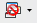
: Il s'agit du bloqueur de pop-up de la barre d'outils (Internet Explorer uniquement). (7)
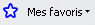
: Raccourci vers la gestion de vos favoris Google. (8)
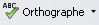
: Correcteur orthographique et suggestions dans 12 langues (Français, Anglais, Allemand, Espagnol, Portugais, Italien, Danois, Finnois, Néerlandais, Polonais, Russe et Suédois :-° ). (9)
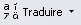
: Accès à Google traduction (traducteur de mots et de pages web). (10)
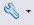
: Une partie intéressante de la barre d'outils : l'accès aux options de la toolbar.
Nous allons maintenant nous concentrer sur l'ajout de boutons déjà listé par Google dans notre barre d'outils.
Pour ajouter Gmail dans la barre d'outils, rendez-vous sur la page listant les boutons de la barre d'outils. Dans le cas où vous ne savez par forcément ce que vous recherchez, la team de Montain View a prévu le coup, vous pouvez ainsi flâner dans la catégorie "technologie" si votre but est de vous constituer une bibliothèque de raccourcis made in g33k, ou "Actualité" si vous êtes un friand de news. La recherche par catégorie est pratique quand on ne sait pas trop ce qu'on veut, sinon la meilleure solution reste la recherche d'un bouton. Pour installer notre raccourci, faites une recherche sur Gmail, puis ajoutez le bouton Gmail qui a été créé par l'équipe de Google. ^^
Maintenant imaginez que ce bouton ne vous intéresse pas, pas de panique il suffit d'aller sur option > boutons personnalisés et de modifier ou supprimer ce qui ne vous convient pas, et d'enregistrer le tout. :-° D'ailleurs, je vous conseille d'aller fouiner dans ces options. ;)
Enfin, on y est, nous allons dès maintenant créer notre propre bouton. ^^
3-1 Votre raccourci vers la messagerie
Dans un premier temps, je vais vous proposer de créer un raccourci vers le service de webmail HoTMaiL, puis promis après nous ferons celui pour le Site du ZérO. ;)
Le but étant que lorsque vous cliquez sur le bouton il vous emmène directement sur la page pour se loguer, comme ceci :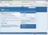
Pour créer notre bouton, cliquez sur cette adresse. Se présente alors une fenêtre d'édition du bouton comme celle-ci :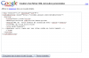
Ici, nous allons nous occuper uniquement des balises <title>, <description>,<search>,<site> et <icon> .
<title>Votre titre</title>
Il s'agit tout simplement du nom que portera votre futur bouton parmi ses confrères. Je propose ici d'écrire entre les balises <title>msn Hotmail</title> .
<description>Votre info-bulle</description>
Ici, vient le texte qui s'affiche lors du passage de la souris sur le bouton. J'ai mis "HoTMaiL".
<search>URL de votre modèle de recherche avec {query}</search>
Adresse où sera envoyée la requête lorsque la barre d'outils ne pointe pas vers l'url du site. Je vous propose "http://www.google.fr/webhp?hl=fr" qui renverra votre recherche sur Google.
<site>URL de votre site</site>
Le point important à ne pas rater puisqu'il s'agit de l'adresse du site où va vous renvoyer notre bouton. Pour renvoyer à Hotmail opter pour "http://www.hotmail.com", url qui vous redirigera vers la page de login du webmail.
<icon mode="base64">
<-- remplacez cette ligne par une icône codée en texte base64 -->
</icon>
Ici est réservée la place de l'icône qui sera affichée dans votre barre d'outils. J'ai choisi ici d'afficher le papillon de MSN (allez je vous donne le favicon
). Vous pouvez choisir l'image que vous voulez ou bien pas d'image du tout, mais de préférence cherchez une image qui soit parlante et de faible résolution (16x16) comme le favicon d'un site pour que l'image soit de la taille des logos de barre d'outils. ;) Ce n'est pas fini, votre image doit être codée en texte base 64.
C'est quoi base 64 ?
C'est un codage de l'information (ici votre image) utilisé principalement pour transmettre des messages. Dans notre cas, le code retranscrit l'image.
Comme je me doute bien que vous ne parlez pas couramment le base 64 :p , je vous donne un lien vers un site qui fera la conversion. Sélectionnez votre image puis lancez la conversion (Convert the source data). Copiez, collez la première zone de texte qui doit ressembler vaguement à ceci :"AAABAAEAEBAAAAAAAABoBQAAFg etc".
Voilà un récapitulatif de ce que vous devriez avoir :
Avec Firefox la procédure est un tantinet plus complexe. :-°
Entre la balise </icon> et </button> je vais vous demander de rajouter ce code
<update>http://toolbar.google.com/</update>
Je vous demande ensuite de copier tout le code que vous avez inséré, puis de retourner sur la galerie des boutons pour ajouter n'importe lequel. Cliquez ensuite dans les options de votre barre d'outils, onglet boutons personnalisés, sélectionnez le dernier ajout et faites "options avancées". Remplacez tout le code par le texte fraîchement copié et sauvegardez le tout, vous avez enfin votre accès direct à Hotmail. :)
3-2 Votre raccourci vers le Site du ZérO
J'ai gardé le meilleur pour la fin. Je vous laisse faire votre propre raccourci vers le SdZ ! :ninja:
Mais avant de vous lâcher comme ça dans la nature je vais vous passer le fameux favicon de ZoZor pour que vous puissiez créer votre toolbar icône (
c'est moi ZoZor l'âne le plus beau le plus fort tu devrais enregistrer cette image sur ton disque dur). Un dernier conseil : remplissez la balise search comme ceci :
Avant de terminer ce tutoriel, je tenais à vous avertir d'une chose. Pour celles et ceux qui n'auraient pas réussi à créer leur propre bouton SdZ ou HoTMaiL, bien que cela m'étonnerait, j'ai moi-même soumis ces boutons à la galerie de la Google Toolbar. Allez quoi, faites pas cette tête-là, vous auriez pu avoir les raccourcis en un clic, mais au moins grâce au tuto vous pouvez personnaliser les raccourcis à votre guise. :D Pour installer le raccourci Site du ZérO, faites une recherche "SdZ" sur la galerie ou cliquez tout simplement ici. :p J'ai aussi uploadé une version du bouton msn hotmail. ;)
Voilà, ce tutoriel touche à sa fin. J'espère que vous l'avez apprécié et que votre navigateur s'est embelli de fioritures personnelles. :lol: Bon surf et peut-être à bientôt pour un nouveau tuto sur le SdZ !
{kind=link}
{kind=link}
{kind=link}